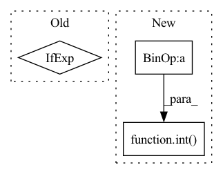

Pattern ID :1578
Before Change
self.na = len(anchors) // number of anchors (3)
self.nc = nc // number of classes (80)
self.img_size = 0
device = torch.device("cuda" if torch.cuda.is_available() else "cpu")
create_grids(self, 32, 1, device=device)
if ONNX_EXPORT: // grids must be computed in __init__After Change
if cfg.endswith("yolov3-tiny.cfg"):
stride *= 2
ng = (int(img_size[0] / stride), int( img_size[1] / stride) ) // number grid points
create_grids(self, max(img_size), ng)
def forward(self, p, img_size, var=None):In pattern: SUPERPATTERN
Frequency: 6
Non-data size: 3
Instances Fragment ID: 4069928
Project Name: nightsnack/yolobile
Commit Name: cfe354064cd599ae6ea902ffaa4dbd106d3a40fb
Time: 2019-04-21
Author: glenn.jocher@ultralytics.com
File Name: models.py
Class Name: YOLOLayer
Method Name: __init__
Parent Class: nn.Module
Fragment ID: 4069929
Project Name: eora-ai/torchok
Commit Name: ab2534f05b48a529d03f8c28af2579245772f4e0
Time: 2022-07-11
Author: rashit.bayazitov.1995@gmail.com
File Name: src/models/modules/blocks/swin_block.py
Class Name: SwinTransformerBlock
Method Name: __init__
Parent Class: nn.Module
Fragment ID: 4069926
Project Name: plemeri/inspyrenet
Commit Name: 12b05eaf235665fc6d1f89a9055b84d7cdfec923
Time: 2021-10-14
Author: taehoon1018@postech.ac.kr
File Name: lib/backbones/SwinTransformer.py
Class Name: SwinTransformer
Method Name: __init__
Parent Class: nn.Module
Fragment ID: 4069970
Project Name: szq0214/cmc_with_image_mixture
Commit Name: c3b36d304fce8787925aa2d9c2415849c9dd0390
Time: 2019-11-25
Author: yonglong@mit.edu
File Name: models/resnet.py
Class Name: ResNet
Method Name: __init__
Parent Class: nn.Module
Fragment ID: 4069968
Project Name: lucidrains/linear-attention-transformer
Commit Name: 75a6cefd9d7facce1ff162dc70138a6e32358f3c
Time: 2020-06-29
Author: lucidrains@gmail.com
File Name: linear_attention_transformer/linear_attention_transformer.py
Class Name: SelfAttention
Method Name: __init__
Parent Class: nn.Module